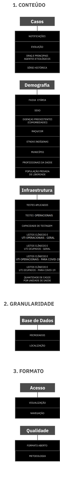
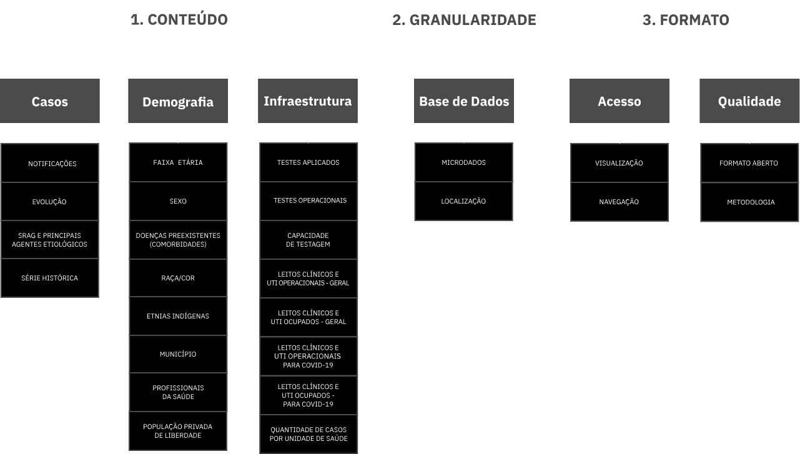

<article class="pagina-secundaria">
  <div class="container-fluid wrap">
    <div class="row mb4">
      <div class="col-xs-12 col-md-8">
        <h3 class="t7 tcb w700">Metodologia</h3>
      </div>
    </div>
    <div class="row">
      <div class="col-xs-12 col-md-8">
        <p class="t4 tcb">O Índice de Transparência da Covid-19 é um indicador sintético composto por três dimensões: <strong>1. Conteúdo, 2. Granularidade e 3. Formato</strong>.</p>
        <p class="t3 tcb">Por sua vez, cada dimensão é constituída por um conjunto de aspectos avaliados separadamente, totalizando 26 indicadores. O Índice é representado em uma escala de 0 a 100, em que 0 representa o ente menos transparente e 100,
          o mais transparente. Os resultados são atualizados semanalmente — alternando a avaliação de estados e de capitais.</p>
      </div>
    </div>
    <div class="row mt3 mb3">
      <div class="col-xs-12 flex flex-column flex-row-sm">
        
        
      </div>
    </div>
    <div class="row">
      <div class="col-xs-12">
        <p class="t3 tcb">Leia a <a href="/files/Nota_Metodologica_Transparencia_da_Covid-19_2.0.pdf" class="link" target="_blank">Nota Metodológica completa</a> com mais detalhes sobre o cálculo do índice e a forma de aferição de cada critério.</p>
        <p class="t3 tcb">Acesse a Base de Dados com o detalhamento da pontuação:</p>
        <p><a href="https://docs.google.com/spreadsheets/d/1Ol_cMNdOA90hndREuGjkKler1xbmsLksWQAuZmJpBJE/edit?usp=sharing" target="_blank" class="btn-txt">Ver dados dos estados</a></p>
        <p><a href="https://docs.google.com/spreadsheets/d/1nX-jt-dgQ1Q5Ke9zXr-dQxC9lAxQy0Zac8WHCyb3zKc/edit?usp=sharing" target="_blank" class="btn-txt">Ver dados das capitais</a></p>
      </div>
    </div>
  </div>
</article>
